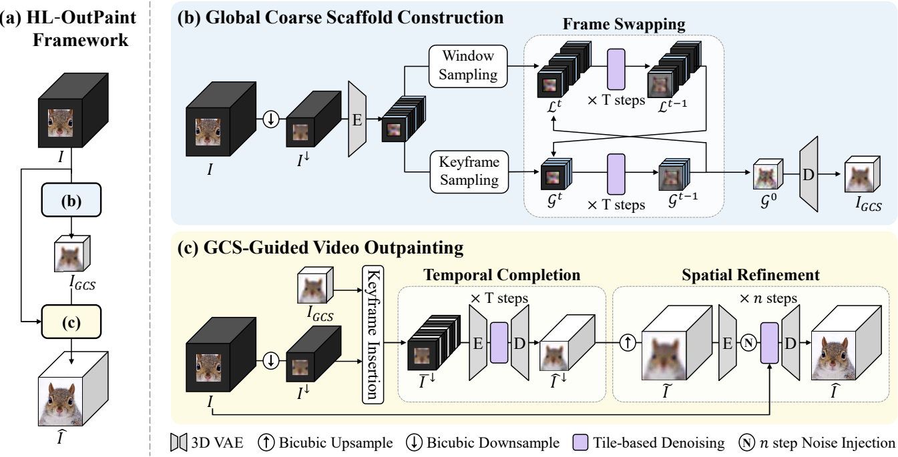

SIGGRAPH 2026
HL-OutPaint supports arbitrary input widths and heights and performs flexible video outpainting across diverse target aspect ratios.
The method uses a two-stage coarse-to-fine pipeline with a Global Coarse Scaffold (GCS) to preserve global scene layout and dominant motion patterns before refining fine spatial details.
Below, each example compares the original input video with the outpainted result generated by HL-OutPaint.
Input
HL-OutPaint Output
Input
HL-OutPaint Output
Input
HL-OutPaint Output
Input
HL-OutPaint Output
Input
HL-OutPaint Output
Input
HL-OutPaint Output
Video outpainting is the task of generating plausible visual content beyond the original spatial extent of a video. With video content increasingly consumed on displays with diverse aspect ratios and resolutions, video outpainting plays a key role in adapting videos to heterogeneous display formats. To accommodate such practical use cases, video outpainting techniques must support large spatial extrapolation over long video sequences.
However, existing methods typically focus on either long video sequences or large spatial extrapolation, and rarely address both simultaneously. They also still exhibit notable limitations even within their respective settings.
In this paper, we propose HL-OutPaint, a practical video outpainting framework that enables high-resolution video outpainting for long video sequences while maintaining spatio-temporal coherence. Our approach follows a coarse-to-fine strategy with a two-stage pipeline. Specifically, we first construct a Global Coarse Scaffold (GCS), a low-resolution representation that captures the global video structure and dominant motion patterns across the entire sequence. Building on this scaffold, HL-OutPaint refines the coarse prediction into spatially detailed and temporally consistent content.
By separating global structure estimation from fine-grained synthesis, our framework preserves spatio-temporal coherence even under large spatial expansion and long video sequences. Extensive experiments demonstrate that HL-OutPaint consistently outperforms existing methods on challenging video outpainting scenarios involving wide spatial extrapolation and long video sequences.
HL-OutPaint follows a two-stage coarse-to-fine framework for high-resolution long-range video outpainting.
In the first stage, the method constructs a Global Coarse Scaffold (GCS) from a spatially downsampled video by jointly modeling sparse global keyframes and local temporal windows with frame swapping, so that both global structure and short-range motion cues are preserved.
This scaffold is further refined in a multi-scale manner by progressively inserting additional keyframes, which improves temporal coverage for very long videos.
In the second stage, the generated GCS guides video outpainting through low-resolution temporal completion followed by high-resolution spatial refinement. Finally, HL-OutPaint applies spatio-temporal tile-based denoising with overlap blending, enabling coherent and detailed outpainting over large spatial expansions and long video sequences.
Method Overview

To further evaluate practical long-video scenarios, we construct two datasets, Long-Video and Short-Form, collected from Pexels, each containing videos of approximately 500 frames.
The Long-Video dataset includes 20 videos and is evaluated under spatial extrapolation from 512 x 512 to 1280 x 720.
The Short-Form dataset consists of 9 portrait-format videos and is used to evaluate the conversion from 416 x 720 vertical videos to a 1280 x 720 horizontal format.
9 portrait-format videos for vertical-to-horizontal outpainting evaluation.
View source list@article{park2026hloutpaint,
title={HL-OutPaint: High-Resolution Long-Range Video Outpainting with a Global Coarse Scaffold},
author={Park, Jeongeun and Han, Janghyeok and Kim, Geonung and Lee, Hyun-Seung and Choi, Kyuha and Han, Youngseok and Cho, Sunghyun},
journal={SIGGRAPH},
year={2026}
}